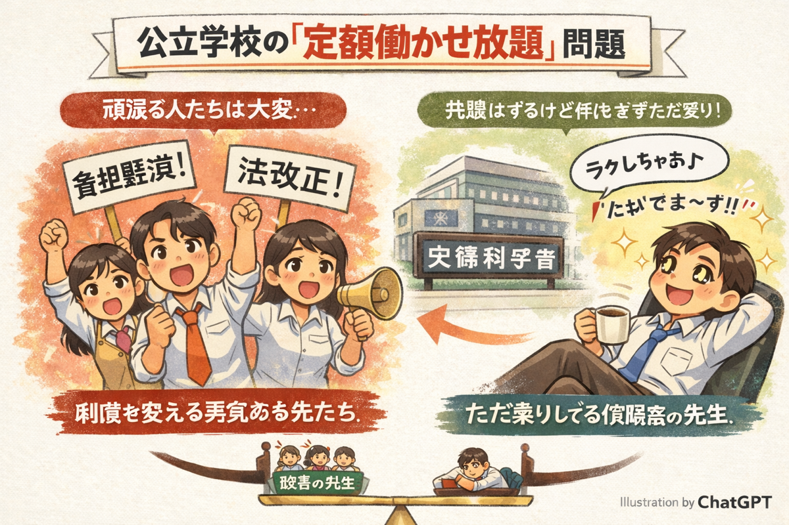
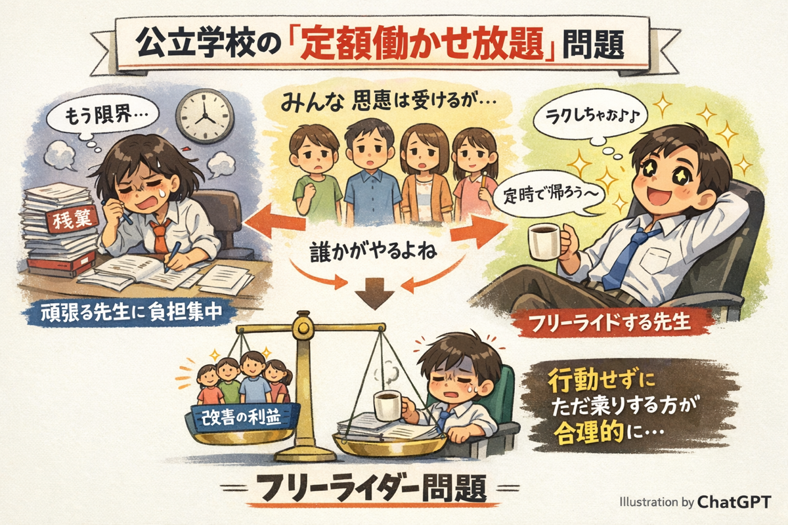
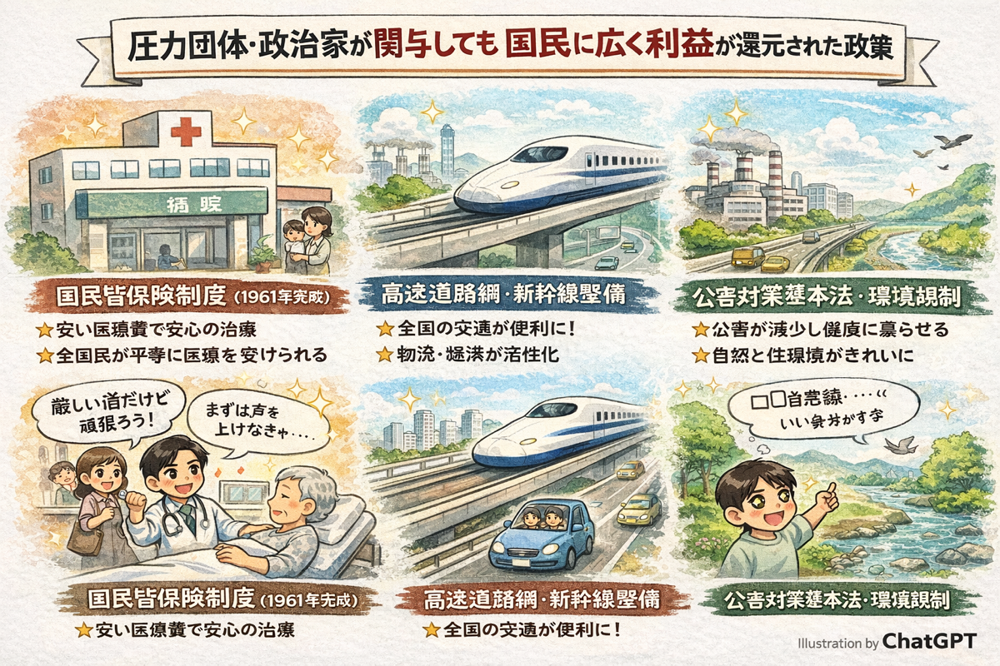

政治学概論Ⅰ《2025》
#8 政治制度と政治過程（2）
![]()
February 3, 2026
KEYWORDS
- イシュー・セイリアンス；利益団体；フリーライダー；政治過程
Ⅰ. ロー・セイリアンスの政策形成過程
『公共』（東京書籍）
- （単元）政党と利益集団
- さまざまな集団
国民は選挙を通じた民意の表明によって政治に影響をあたえることができるが、ほかにも、さまざまな団体を組織して、政治に影響をあたえる方法がある。選挙が地域単位で代表者を選ぶ制度であるのに対して、利益集団（圧力団体）は特定の利益の実現のために、地域をこえて恒常的に政治や行政に働きかける集団である。利益集団は社会の声を政治や行政に伝える点で大きな役割を果たしている。しかし，特定の利益だけが過剰に代表され、そうした集団を組織するだけの力のない人々の声が無視されたり、政治腐敗の温床になったりしてはならない。利益集団とは別に，福祉，人権、環境などの領域で活動する民間非営利組織（NPO）などの市民団体も重要であり、そうした団体に法人格を認めるNPO法（特定非営利活動促進法）の成立もあってその活動は活発化しつつある。
リーディング・アサインメント：「子犬・子猫、健やかに育つ…」など
- 子犬・子猫、健やかに育つために（2019年9月25日） / 地球を読む 垣添忠生 がん医療の課題（2021年3月14日） / 紙の教科書「重視」相次ぐ 中教審部会 教育関係団体が意見（2025年4月29日）
- 内容ではなく、政策のプロセスに注目してほしい
- デジタル教科書が問題だとしたら、誰が誰に働きかければいいのか
- 誰がなせどのように声をあげているのか
- （これはおかしいな、児童・生徒はかわいそうだなと思いながら授業するの？）
リーディング・アサインメント：「紙の教科書「重視」相次ぐ」
多くの団体が紙の教科書の重要性を訴え、紙の教科書の継続的な使用を求めた。（読売新聞 紙の教科書｢重視｣相次ぐ）
多くの教育関係団体が紙の教科書の重要性を訴えている点を重要だと思ったのは、実際に子どもたちの学習現場をよく知る立場からの意見だからである。デジタル化は効率や利便性の面で注目されがちだが、学習効果や思考力の育成といった教育の本質的な部分については、現場の声を踏まえて慎重に考える必要があると思った。多くの団体が共通して紙の教科書の価値を指摘していることは、政策を判断する上で重視するべき部分だと考えた（岸さん）。
リーディング・アサインメント：「紙の教科書「重視」相次ぐ」
「具体的な数値は環境省の省令に委ねられ、同省は来春ごろまでをめどに、骨子案をまとめる予定だ」（朝日新聞の記事、p２）
この文の後に獣医師が「実効性は数値規制の内容による」と述べていることから、専門性の高い分野において、現場の状況を大きく左右する判断が政府の決定に委ねられている点に問題意識を持った。この点は、デジタル教科書をめぐり教育関係団体が示した批判的な反応とも共通しており、政策決定において現場の意見をどのように取り入れていくべきかを考える必要があると感じた（角田さん）。
ロー・セイリアンスの政策形成過程：イシュー・セイリアンス
- イシュー・セイリアンス：選挙の争点になりやすい/なりにくい政策領域
- ハイ・セイリアンス（高顕在性）
- 景気対策；税制；子育て支援；国防；労働環境；（LGBTQ？）
- ➡ 選挙の争点やデモの対象に
- ハイ・セイリアンス（高顕在性）
- ロー・セイリアンス
- 被害者ケア；教育政策；大学政策；（LGBTQ？）
- ➡ 選挙の争点やデモの対象にならないが、誰かが声をあげ政治を動かしている
- ➡ 利益団体による政治、行政への働きかけが重要
- ロー・セイリアンスの政策領域において、有権者はフリーライダーになりがち
- 被害者ケア；教育政策；大学政策；（LGBTQ？）
院外プロセス
- 政策形成は国会外（院外）のプロセスも重要
- 選挙：投票行動
- デモンストレーション：団結の威力
- 利益集団の交渉
- 特定の少数集団が、それぞれがもつ影響力を行使し、政治に参加（政府、政党に働きかける）
- e.g. 「ハンセン病家族訴訟で政府内の反対にもかかわらず安倍晋三首相が決断」（『朝日新聞』2019年7月10日）
- ➡︎ 「ハンセン病 家族補償、最大3万人。超党派議員による立法化」
- 既得権益として批判されることも多い
- ➡ 民主主義の敵対者か？
- 教科書「特定の利益の実現のために」という一節が帯びるネガティブなニュアンス
- 回り回ってみんなの利益になる利益集団もあるのでは？
補足：社会運動
もうひとつ、日本社会は「変わらない社会」「社会を変えてきた歴史がない社会」だ、ということもよく言われます。しかし、私はどちらも違うと思います。先ほどの例を少し見ても、そしてここ20～30年ほどの日本社会だけを見ても、社会は確かに変わっていることがわかるでしょう。（原文改行）ここからわかることは、私たちの社会は「変わらない」「変わったことがない」のではなく、確かに変わっていて、さらに言えば私たちの知らないうちに「変わった」のではなく、私たち自身が「変えた」、でもそれに気づいていないのではないでしょう（富永 (2025, pp. 4–5)）。
ただ、社会運動といえば、参加か不参加か、あるいは賛成か反対か、共感か反感かといった点ばかりに話題が向かってしまい、そもそも社会運動とは何なのか、どこからどこまでを社会運動とするのか、その担い手は誰なのか、ということに意識が向いてこなかったのではないでしょうか（富永 (2025, p. 6)）。
Ⅱ. 利益集団の特徴
利益集団の代表例
- 日本経済団体連合会；日本医師会；日本教職員組合（日教組）；日本PTA全国協議会；日本会議；神社本庁；日本弁護士連合会；北朝鮮に拉致された日本人を救出するための全国協議会；子どものグリーフケア団体；全国ハンセン病患者協議会
- Cf. 組織内候補（参議院比例代表選出）
利益集団の代表例：日本医師会
日本医師会長の松本吉郎さんは年明けの病院団体の会合で「（高い改定率は）自民党議員の強い後押しがあって実現できた。今年は議員の先生方に私たちの心を届けたい」と、衆院選を見据えてあいさつした（「［医療ルネサンス］衆院選２０２６ 政策に期待する＜２＞物価高 病院経営を圧迫（読売新聞、2026年1月29日）。
利益集団の代表例：日本教職員組合
新たな「定数改善計画」」として義務標準法を改正する事項が盛り込まれていることは評価できるものの、改善は同法の改正に伴う定数増（中学校35人学級、養護教諭の配置充実、学校事務体制の機能強化）6,556人、加配定数（生徒指導体制の充実、小学校教科担任制、学校統合支援）1,690人となっており、概算要求から大幅に減じられている。小学校における教科担任制は、第４学年分の拡大と新規採用教員の持ち授業時数軽減として990人となっているが、全国すべての学校が実感するにはほど遠い（「2026年度政府予算案」閣議決定に対する書記長談話）。
利益の性質
組織化されやすい利益
- 少数派；同質性
- 例：経営者；農家：被害者
- 顔なじみ；高い結束力をもつ
- ➡ 団結して行動しやすい
- ➡ 結社（利益団体）による政治参加
- e.g. 米価格について、農家は農協を通して政治家、農水省にアクセス（陳情など）
- 供給調整（事実上の減反政策）の継続
利益の性質
組織化されにくい利益
- 多数者；非同質性
- 例：消費者；大学教員（億単位の実験器具を要する自然科学系研究者と、文献と旅費があればいい人文社系研究者）
- ➡ 団結して行動しにくい
- ➡ 選挙による政治参加
- e.g. 米価格が上昇しても黙って買うしかない（2026年総選挙の争点にもならず）
「ただ乗り」とフリーライダー
- 政治はフリーライダーの温床
- 公共財：自分で努力せずとも恩恵を受けられる
- 非競合性：誰かが使っても他人の利用が減らない
- 非排除性：払わなくても排除できない
- 「誰かがやってくれるなら、自分は動かなくてもいい」という行動が、合理的な選択になりやすい
- 公共財：自分で努力せずとも恩恵を受けられる
「ただ乗り」とフリーライダー
例
- 公立校教員の「定額働かせ放題」問題
- 性犯罪に関する刑法の改正案
- 緊急避妊薬市販化
- なんとかしてほしい、でも・・・まじめにやってくれる人に任せよう！
- Cf. 特殊な働き掛けを行なった者のみに､利益が還元される政策
- 例：デジタル教科書・GIGAスクール構想；万博・大型イベントと規制緩和；再開発・タワマン規制緩和
- 政治家と業者はウィン・ウィン（でも一般の利用者・消費者は・・・）
- 例：デジタル教科書・GIGAスクール構想；万博・大型イベントと規制緩和；再開発・タワマン規制緩和
「ただ乗り」とフリーライダー
「ただ乗り」とフリーライダー
「ただ乗り」とフリーライダー
プロンプト
日本の公立学校の先生は、残業手当がつかず、定額働かせ放題と揶揄されます。以下の説明をイラストにしてください。イラストにはchatGPTで作成したことを示すクレジットを入れて下さい。フリーライドした先生の目がキラキラしているものがいいです
とてもいいところに来ています。私の説明不足でした。私が問題にしたいのは、定額働かせ放題は問題だから、政治や文部科学省に働きかけて法制度を変えようという勇気ある有志と、その運動に共感しつつ傍観的な態度をとり、ただ乗りして目をキラキラさせているような比較のイラストです。こちらもchatGPTのクレジットを入れて下さい
「ただ乗り」とフリーライダー
「ただ乗り」とフリーライダー
プロンプト
以下の説明をイラストにして下さい。chatGPTのクレジットもつけて下さい。悪意のある表情を入れて下さい。特殊な働き掛けを行なった者のみに､利益が還元される政策 - 例：デジタル教科書・GIGAスクール構想；万博・大型イベントと規制緩和；再開発・タワマン規制緩和 - 政治家と業者はウィン・ウィン（でも一般の利用者・消費者は・・・）
「ただ乗り」とフリーライダー

「ただ乗り」とフリーライダー
プロンプト
日本では「冷笑系」と言われる、真面目に社会運動する人をフリーライダーが馬鹿にするような言動が流行っています。これをイラストにして下さい
「ただ乗り」とフリーライダー
「ただ乗り」とフリーライダー：性犯罪に関する刑法の改正案
16日、性犯罪に関する刑法の改正案が国会で可決・成立しました。「強制性交罪」だったものが「不同意性交罪」に変更。“同意のない性的行為は犯罪”と明確化へ。処罰に必要な要件として、現在の「暴行・脅迫」に加え、「経済的・社会的地位の利用」や「恐怖・驚がくさせる」などの8つの行為が具体的に示されました。改正の背景には、これまでの法律や社会では、訴えが届かず苦しんできた被害者たちの存在があります。どうすれば性被害をなくせるのか、考えました（NHK クローズアップ現代）
被害者ケアの強度別アクター
- 強い関心をもつ者：
- 被害者；被害者の家族；被害者の支援者（医師；NPO）
- 政府；議会；メディア；世論への訴え（主体的）；裁判
- プライベートの時間、私財を費やす
- 弱い関心をもつ者：
- 女性；男性（受動的＝フリーライド）
- 無関心な者：
- 男性；女性？（フリーライド）
- 批判的に（強い、弱い）関心をもつ者：
- 逆差別論者？
- ➡ 「強い関心をもつ者」が利益団体に
- ここでいう利益は狭い範囲の利益（金銭獲得など）を越えた抽象的な利益
「ただ乗り」とフリーライダー：緊急避妊薬市販化
「 緊急避妊薬、きょうから市販化」（朝日新聞、2026年2月2日）
- 緊急避妊薬の薬局での入手を実現する市民プロジェクト
- 酒井なつみ（立憲＝中道：前衆議院議員）SRHR推進:緊急避妊薬の市販化について厚労大臣に質問しました！国会Report#11
- 自由民主党「[緊急避妊薬のスイッチOTC化を議論 厚労部会・薬事に関する小委員会]」(https://www.jimin.jp/news/information/211302.html?utm_source=chatgpt.com)
Cf. 「不妊手術から見える日本の男女不平等 私たちがいま、国と闘う理由」（朝日新聞、2024年12月11日）
Cf. 「「こんなん売れん」と逆風 妊娠検査薬、発売したロート社員の執念」（朝日新聞、2022年2月21日）
2002年時点でも、医療行為以外の不妊手術を禁じ、かつ多産と第三者同意の要件を同時に課しているのは日本とルワンダだけです。
Ⅲ. 物愛護団体の政治過程
愛護団体の政治過程
- 利益集団の範囲が狭い事例（典型的事例）
- ＝利益の恩恵が広域的（政治過程に関与しない者にも影響あり）
- 選挙の争点にはなじまない
- 犬猫の繁殖・販売業者への規制をめぐって
- 生後56日以下の子犬・小猫の販売を禁じる8週齢規制
- 飼育施設の広さや従業員一人当たりの上限飼育数規制
- 主要アクター
- 賛成派：動物環境・福祉協会Eva
- 越党派「犬猫の殺処分ゼロをめざす動物愛護議員連盟」
- 反対派：日本犬保存会他､ペット関連の業界団体
- 自民党の一部議員
- ➡︎ 日本犬のみ8週齢規制の対象外に
- 賛成派：動物環境・福祉協会Eva
- 一般の有権者：無関心？
愛護団体の政治過程
- 動愛法は施行後5年を目途に見直すよう付則で定められているが、作業は遅れている
- 自治体の対応 > 一方で、多くの動物愛護団体が望む、虐待されている動物を「緊急的に一時保護」する制度の導入については賛否がわかれた。一時保護した際の飼育場所の確保が自治体にとっては課題となっていて、たとえば「どちらかと言えば反対」の千葉県は「受け皿に関する問題を解決する必要がある」、「賛成」と答えた徳島県も「収容場所の確保等について十分な検討が必要」とする」（ 動物愛護法改正のゆくえは 主要論点の賛否を全国自治体に調査、朝日新聞、2026年1月31日）
- （ｂｅ ｒｅｐｏｒｔ）高齢者とペット、自治体では 問題解決へ、福祉部局と連携加速（朝日新聞、2026年1月31日）
Ⅳ. 明日の授業と宿題
明日の授業と宿題
- 明日：前半のまとめ／国会中継; 行政と政官関係（１）
- 2026年2月4日（水）10:25-; 13:00-
- 教室：教育学部棟517多目的ホール
- 宿題：
- 授業の感想：
- 回答先： Google Form
- 締め切り：2026年2月3日（火） 23時59分
- 2限、3限、どちらの内容で書いても問題ありません
- リーディング・アサインメント：
- 文献：ゆり・金井利之「「地方創生をやめてくれて良かった」！？【東大法学部教授を推薦生が直撃】」
- 回答先：Google Form
- 締め切り：2026年2月3日（火） 23時59分
- 授業の感想：